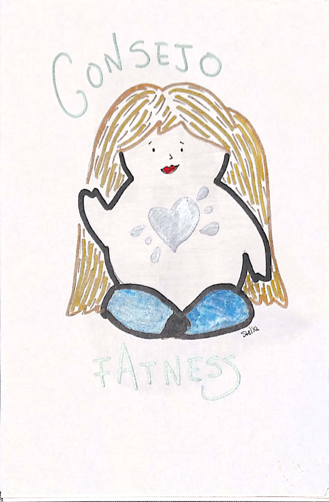

Hoy vi unas historias en instagram donde atacan a la modelo @brenda.mato gordofobiques de morondanga. La piba va a un programa para hablar de su trabajo ya que sale en una revista y las panelistas le preguntan por su salud "no te da miedo ser gorda? Tus arterias? Tus rodillas?" Pero por favor! Las rodillas de les gordes preocupación de salud nacional. Raro que no pase con la espalda de las tetonas! Preocupación selectiva se ve! No perdonan que un gorde sea sujeto de deseo, que se sienta linde y libre. Lamentablemente los medios de comunicación se están quedando atrás y estorban en el proceso de cambio. Todes tenemos actitudes gordofobicas, machistas y racistas. Empezar a identificar la mierda propia para modificar y no dejar pasar por alto ningún comentario del orto ese es el futuro.